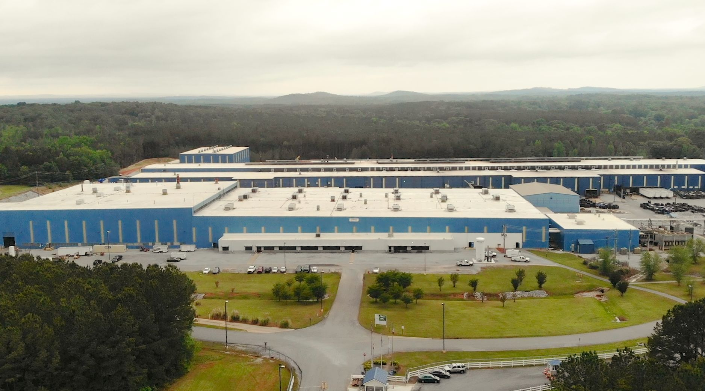
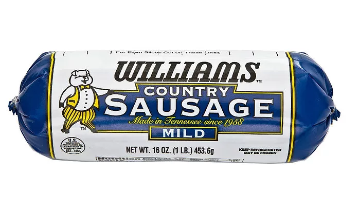
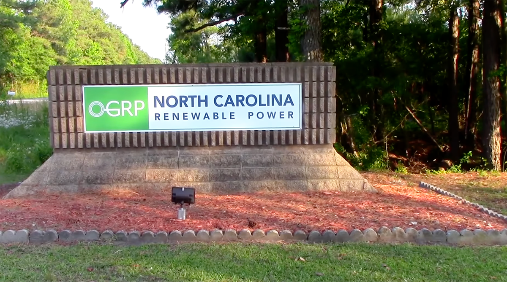

Investor
JPMorgan Chase
$45 Million Nemak Project
Sylacauga, Alabama · Closed 2017
Installation of new equipment, tooling, production lines and manufacturing process and expansion of internal reconfiguration to converting facility from outdated technology to utilizing more efficient technology. This project created 100 FTE jobs. Nemak USA, Inc. is an existing manufacturer of complex aluminum components primarily for the automotive industry, utilizing recycled aluminum.

$4 Million Williams Sausage Expansion
Union City, Tennessee · Closed 2017
Founded by a Tennessee family in 1958, the Williams Sausage Company has grown from selling sausages in cloth bags out of a truck to offering link sausages, sausage patties and microwaveable breakfast sandwiches in more than 4,000 retail outlets across 20 states. Williams constructed a new 200,000 square foot production facility, distribution center, truck maintenance shop and corporate office allowing them to introduce a new sausage line, expanding into new markets and producing more than 200 jobs.

$15 Million North Carolina Renewable Power-Lumberton
Lumberton, North Carolina · Closed 2015
Creating 140 FTE jobs and 369 construction jobs, North Carolina Renewable Power (NCRP) retrofitted an existing dormant coal-fired power plant to a renewable energy power plant utilizing biomass, in particular, poultry litter and wood waste: NC Renewable Power (NCRP) retrofit a dormant coal-fired power plant to a 25MW renewable energy power plant utilizing locally sourced poultry litter and wood waste. The NCRP plant is located in rural Robeson County, one of NC’s poorest areas and a region dominated by large scale poultry production. Water runoff from poultry litter pollutes local waterways. NCRP’s use of poultry litter helps local farmers and removes a significant amount of poultry litter from the community. NCRP is only the second utility scale power plant in the US utilizing a high percentage of poultry litter.
